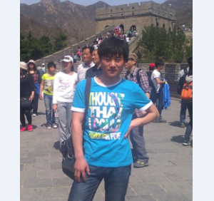

Resume
基本信息
刘利朋，男，内蒙古赤峰市人，研究生，中国海洋大学信息科学与工程学院视觉实验室 成员。2014年7月毕业于天津科技大学 计算机科学与技术专业本科，获工学学士学位；2015年起在中国海洋大学 计算机软件与理论专业攻读硕士学位。我的研究兴趣为：深度学习、机器学习、计算机视觉，海洋大数据。熟练应用c++、php等编程语言、SQL数据库查询语言和Linux指令。

教育经历
本科阶段（2010-2014）担任副班长，曾多次获得天津科技大学奖学金。
研究生阶段（2015-）以计算机软件与理论专业第一名的成绩考入中国海洋大学，师从于孙鑫教授。
技能
编程语言：C /C++/PHP
实用语言：日语能力：日语二级 ; 英语能力：英语四级
数据库语言：SQL语言
深度学习框架：caffe ;theano